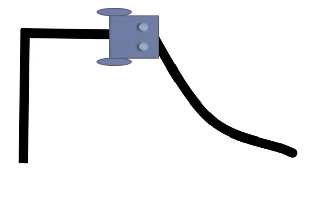
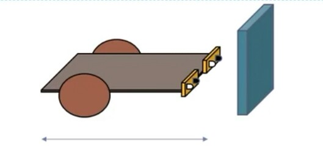
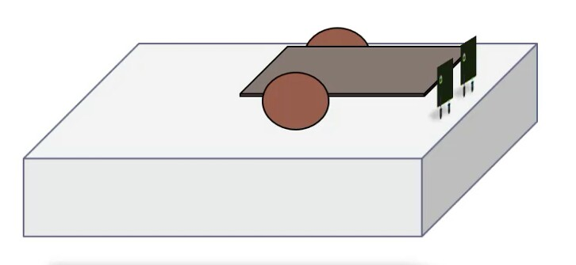
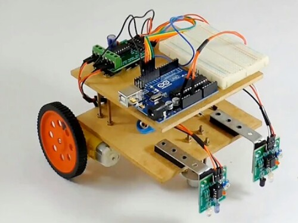

Projects
*SENSOR GUIDED ARDUINO ROBOTS
-->Line Follower Robot
-->Object Follower Robot
-->Object Avoider Robot
-->Edge Detection Robot
*Market Basket Analysis
SENSOR GUIDED ARDUINO ROBOT
Sensor Guided Autonomous Robotics comprises of robots that function depending on the inputs
from sensors and are controlled with the help of an Arduino Uno. Arduino is an embedded system
which acts as the brain for thousands of projects, from everyday objects to complex scientific
instruments.
Arduino is an open source Hardware and Software development platform. Microcontrollers used mostly
in Arduino are ATmega8, ATmega168 and ATmega328
Features of Arduino Uno:
->Advanced RISC Architecture
->3 PWM Channels
->Programmable Serial USART
->External and Internal Interrupt sources
->Operating Voltages 4.5V - 5.5V
->On-chip Analog Comparator
->8-channel ADC with 10-bit Accuracy
Types of Light Sensors:
->Light Dependent Resistor
->Photovoltaic Cell
->Infra Red Sensor
->Photo Diode
->Proximity Sensor
Object Detection Using IR Sensor:
IR Sensor has two main components, one which emitts light(LED) and the other which absorbs light(Photo Diode)
Below you can see the sample figures of how a LED emitts light and photodiode absorbs it if the
light gets reflected from any surface. Below you can see prototype of how a IR sensor works


Equipment used :
1]Arduino Uno
2]Motor Driver Circuit
3]Digital IR Sensors
4]Breadboard
5]M3 Screws(60mm, 45mm, 30mm, 6mm)
6]LED
7]Double Sided Tape
8]BO1 Wheels and Motors
9]Metal Clamps
10]Metal hole strips
11]Castor Wheel
12]9V Battery Connector
13]Barrel Connector
14]Female to Female single pin connectors
15]Male to Male single pin connectors
16]Male to Female single pin connectors
17]Wooden board
18]UART Cable
19]Wire stripper
20]Screw Driver
21]Insulation tape
Line Follower Robot:
This robot is an autonomous robot capable of detecting the path and actuate accordingly.
The robot uses I.R. sensor to detect the black line and move accordingly in the designated path.
Below is the model of how a line follower robot follows the line.
Click here to see my project code for line follower robot.

Object Follower Robot
This robot can follow any object that comes in its way. Here the I.R. sensors will act as
an eye of the robot. The robot will be at rest until it detects any object and starts moving towards the object if it
detects any. Below is the model of how a robot detects an object infront of it through the sensors

Object Avoider Robot:
This robot is capable of avoiding any object that comes in its way on its own. The
microcontroller is programmed in such a way that whenever I.R. sensors detect any obstacle, immediately the
robot will change its direction.
Click here to see my project code for Object Avoider Robot.
Edge Detection Robot:
This robot is capable of avoiding any object that comes in its way on its own. The
microcontroller is programmed in such a way that whenever I.R. sensors detect any obstacle, immediately the
robot will change its direction.Below is the model of how a robot detects edges ,note here that the orientation
of sensors gets changed here.

Below is the picture of a complete Arduino Robot

MARKET BASKET ANALYSIS
Market basket analysis is a data mining technique used by retailers to increase sales by better understanding customer purchasing patterns. It involves analyzing large data sets, such as purchase history, to reveal product groupings, as well as products that are likely to be purchased together.
It is one of the key techniques used by large retailers to uncover associations between items.
In market basket analysis, association rules are used to predict the likelihood of products being purchased together. Association rules count the frequency of items that occur together, seeking to find associations that occur far more often than expected.
The Apriori algorithm is commonly cited by data scientists in research articles about market basket analysis and is used to identify frequent items in the database, then evaluate their frequency as the datasets are expanded to larger sizes.
Examples of market basket analysis :
The Amazon website employs a well-known example of market basket analysis. On a product page, Amazon presents users with related products, under the headings of “Frequently bought together” and “Customers who bought this item also bought.”
Market basket analysis can increase sales and customer satisfaction. Using data to determine that products are often purchased together, retailers can optimize product placement, offer special deals and create new product bundles to encourage further sales of these combinations.
Association Rule Mining :
Association rule mining is a very good algorithm which helps the business make profit.
Association rule mining is all about building the rules and we write the code with the
help of certain algorithm whioch states if u buy an item 'X' then then there's a slight
possibility that you might buy 'Y' and we write this or denote this realtion as 'X'-->'Y'
and the relation between these two items is known as single cardinality and the cardinality also
increases when the product groupings are more.
Apriori Algorithm:
Apriori Algorithm is a Machine Learning algorithm which is used to gain insights into
the structured relationships between different items involved. The most prominent practical
application of the algorithm is to recommend products based on the products already present
in the user's cart
There are three types of matrices which help to measure the association, we have 'SUPPORT',
'CONFIDENCE' and 'LIFT'
Let us consider an example to understand how to analyze these three terms
let 'X', 'Y', 'Z' be three any products. Consider suppose a customer purchased product 'X' and
product 'Y', now we need to find all the rules for the transaction X & Y --> Z, the expression
means that the product 'Z' is recommended to the user given that the user purchased the items 'X'
and 'Y'.This recommendation is based on the history of purchased items and the threshold
which is set by the respective retsil or an e-commerce company
We need to find the three metrics from the history of transactions(support, confidence and lift):
-->support is the probability that a transaction contains {'X','Y','Z'}
-->confidence is the conditional probability that a transaction having {'X' & 'Y'} also
contains 'Z'
-->lift is defined as the ratio of support to the confidence
In this project i have took a dataset which contains 7500 customer transactions and mined
the rules and product remmondations , click here to see my code.